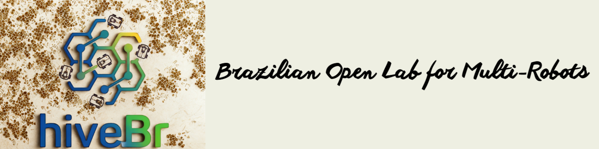
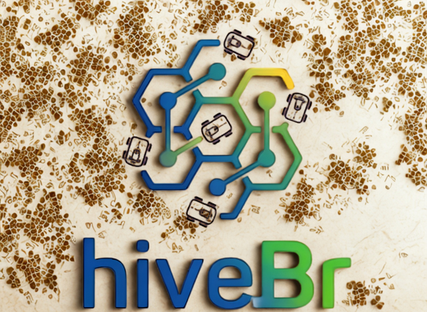

Home

🐝hiveBr🐝 is a lightweight 2D simulation framework for single- and multi-robot mobile navigation. It ships a Pygame-based physics/renderer engine and a clean OpenLab API that lets the same user script run a fleet locally or on a physical arena.
Robots in the simulator are called B-bots (for bee), keeping with the hive metaphor.
Why hiveBr?¶
- Mono or fleet, one API. A single robot is just a fleet with
N = 1. - Dual paradigm. Write decentralized logic with
HiveBrAgent(one instance per B-bot) or centralized logic withSwarmController(one object for the whole fleet). - Interactive GUI. Pan, zoom, load occupancy-grid maps, switch themes, toggle LiDAR, and add waypoints/obstacles with the mouse.
- Two environment representations. Analytic circular obstacles and image-based occupancy grids with inflation.
- Precision sensing. Ray-casting LiDAR using a DDA algorithm against the grid plus analytic circle intersections.
- Deterministic fleets. Every timestep is computed from a frozen snapshot of the fleet state, so results are independent of robot update order.
- Research-ready. Pluggable controllers, path planners (A*, RRT, RRT*, PRM, BIT*, OMPL, RRT-Dubins), and a data logger for offline analysis.
A 20-second taste¶
from hivebr import HiveBrAgent, SwarmExperiment
class Patrol(HiveBrAgent):
def loop(self, state, neighbors):
# state.goal holds the current waypoint (x, y, theta)
return 0.5, 0.0
exp = SwarmExperiment(robots=3, backend="navsim2d")
exp.assign_agent(robot_ids=[0, 1, 2], agent_class=Patrol)
exp.assign_route(0, [[5, 2, 0.0], [5, 6, 0.0]])
exp.run()
Switching backend="ros2" reuses the same agent code on the physical lab.
Where to go next¶
-
Getting started
Install hivebr and run your first B-bot in minutes.
-
Robots, sensors & maps
Understand the five kinematic models, LiDAR and occupancy grids.
-
OpenLab API
Master the dual paradigm: decentralized agents and centralized controllers.
-
API reference
Auto-generated reference for every class and function.
